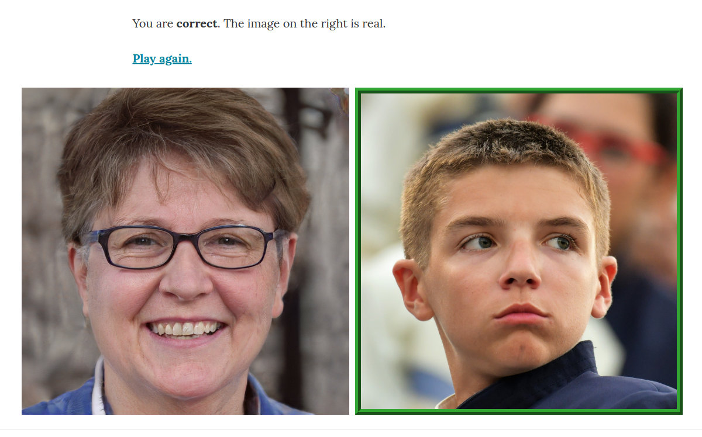

Jonas Glombitza
Ph.D. in Physics
Postdoc at Erlangen Centre for Astroparticle Physics
interested in
deep learning | cosmic rays | gamma-ray astronomy
currently working on
deep-learning-based reconstruction algorithms
and
generative models
interested in
deep learning | cosmic rays | gamma-ray astronomy
currently working on
deep-learning-based reconstruction algorithms
and
generative models
Try to identify which images are real photographs and which ones were generated using Generative Adversarial Networks.
I am postdoc at the Erlangen Centre for Astroparticle Physics, Germany, after finishing my Ph.D. in physics in December 2021 at RWTH Aachen University. Currently, I'm investigating machine learning algorithms in the context of particle and astroparticle physics. I am interested in generative models, graph networks, computer vision, and the application of deep-learning techniques in physics analyses. For five years, I have been a lecturer for the deep learning lecture series in physics at RWTH Aachen University and teach machine learning algorithms in international tutorials and workshops. I am a co-author of the textbook Deep Learning for Physics Research and the leader of the machine learning group in the Pierre Auger Collaboration.
As a Pierre Auger Collaboration member, a large part of my work is dedicated to the physics of ultra-high energy cosmic rays. Within the collaboration, I am the leader of the machine learning task. Recently, I joined the H.E.S.S. experiment, the Southern Wide-field Gamma-ray Observatory (SWGO), and the Cherenkov Telescope Array (CTA) to develop novel machine-learning algorithms for improving the sensitivity of the current and future generation of gamma-ray observatories.
Earlier I focused on machine learning algorithms for object reconstruction. In collaboration with colleagues we developed reconstruction algorithms based on Convolutional networks and Graph Convolutional Neural Networks. Furthermore, I worked on generative models and was involved in developing methods to accelerate simulations using Generative Adversarial Network (GANs / WGANs) and the design of adversarial frameworks in the context of domain adaption.
Tutorial about Graph Convolutional Neural Networks. Tutorial contains slides about basic theory on graphs and convolutions. Convolutions in the spatial and the spectral domain are discussed and explained using code examples. Slides and code are available.
Tutorial about the reconstruction of cosmic-ray properties using deep neural networks. Held at the Paris-Saclay AstroParticle Symposium 2021.
Fully-connected networks:
Convolutional Networks:
Tutorial about Generative Adversarial Networks (GANs) given at CERN during the IML Workshop 2019. Tutorial contains slides and code.
Or just open the tutorial via binder:
Tutorial about basic machine and deep learning concepts covering the topics about neural networks, regularization and convolutional networks. Tutorial contains Slides and code. For code see the example section at VISPA.
Tutorial on GANs and Wasserstein GANs. Covering the basic theory about the Wasserstein distance and related similarity distances and divergences for high-dimensional spaces. For code see the example section at VISPA.
GANs:
WGANs:
A core principle of physics is knowledge gained from data. Thus, deep learning has instantly entered physics and may become a new paradigm in basic and applied research. This textbook addresses physics students and physicists who want to understand what deep learning actually means, and what is the potential for their own scientific projects. Being familiar with linear algebra and parameter optimization is sufficient to jump-start deep learning. Adopting a pragmatic approach, basic and advanced applications in physics research are described. Also offered are simple hands-on exercises for implementing deep networks for which python code and training data can be downloaded (see deeplearningphysics.org).
The present white paper is submitted as part of the “Snowmass” process to help inform the long-term plans of the United States Department of Energy and the National Science Foundation for high-energy physics. It summarizes the science questions driving the Ultra-High-Energy Cosmic-Ray (UHECR) community and provides recommendations on the strategy to answer them in the next two decades.
Ph.D. thesis, RWTH Aachen University, 2021. December 2021
We introduce a collection of datasets from fundamental physics research ‐ including particle physics, astroparticle physics, and hadron- and nuclear physics ‐ for supervised machine learning studies. These datasets, containing hadronic top quarks, cosmic-ray induced air showers, phase transitions in hadronic matter, and generator-level histories, are made public to simplify future work on cross-disciplinary machine learning and transfer learning in fundamental physics. Based on these data, we present a simple yet flexible graph-based neural network architecture that can easily be applied to a wide range of supervised learning tasks in these domains. We show that our approach reaches performance close to state-of-the-art dedicated methods on all datasets. To simplify adaptation for various problems, we provide easy-to-follow instructions on how graph-based representations of data structures, relevant for fundamental physics, can be constructed and provide code implementations for several of them. Implementations are also provided for our proposed method and all reference algorithms.
The atmospheric depth of the air shower maximum Xmax is an observable commonly used for the determination of the nuclear mass composition of ultra-high energy cosmic rays. Direct measurements of Xmax are performed using observations of the longitudinal shower development with fluorescence telescopes. At the same time, several methods have been proposed for an indirect estimation of Xmax from the characteristics of the shower particles registered with surface detector arrays. In this paper, we present a deep neural network (DNN) for the estimation of Xmax. The reconstruction relies on the signals induced by shower particles in the ground based water-Cherenkov detectors of the Pierre Auger Observatory. The network architecture features recurrent long short-term memory layers to process the temporal structure of signals and hexagonal convolutions to exploit the symmetry of the surface detector array. We evaluate the performance of the network using air showers simulated with three different hadronic interaction models. Thereafter, we account for long-term detector effects and calibrate the reconstructed Xmax using fluorescence measurements. Finally, we show that the event-by-event resolution in the reconstruction of the shower maximum improves with increasing shower energy and reaches less than 25 g/cm² at energies above 2×10¹⁹ eV.
We present a new approach for the identification of ultra-high energy cosmic rays from sources using dynamic graph convolutional neural networks. These networks are designed to handle sparsely arranged objects and to exploit their short- and long-range correlations. Our method searches for patterns in the arrival directions of cosmic rays, which are expected to result from coherent deflections in cosmic magnetic fields. The network discriminates astrophysical scenarios with source signatures from those with only isotropically distributed cosmic rays and allows for the identification of cosmic rays that belong to a deflection pattern. We use simulated astrophysical scenarios where the source density is the only free parameter to show how density limits can be derived. We apply this method to a public data set from the AGASA Observatory.
In recent years, great progress has been made in the fields of machine translation, image classification and speech recognition by using deep neural networks and associated techniques. Recently, the astroparticle physics community successfully adapted supervised learning algorithms for a wide range of tasks including background rejection, object reconstruction, track segmentation and the denoising of signals. Additionally, the first approaches towards fast simulations and simulation refinement indicate the huge potential of unsupervised learning for astroparticle physics. We summarize the latest results, discuss the algorithms and challenges and further illustrate the opportunities for the astrophysics community offered by deep learning based algorithms.
The surface-detector array of the Pierre Auger Observatory measures the footprint of air showers induced by ultra-high energy cosmic rays. The reconstruction of event-by-event information sensitive to the cosmic-ray mass, is a challenging task and so far mainly based on fluorescence detector observations with their duty cycle of ≈ 15%. Recently, great progress has been made in multiple fields of machine learning using deep neural networks and associated techniques. Applying these new techniques to air-shower physics opens up possibilities for improved reconstruction, including an estimation of the cosmic-ray composition. In this contribution, we show that deep convolutional neural networks can be used for air-shower reconstruction, using surface-detector data. The focus of the machine learning algorithm is to reconstruct depths of shower maximum. In contrast to traditional reconstruction methods, the algorithm learns to extract the essential information from the signal and arrival-time distributions of the secondary particles. We present the neural-network architecture, describe the training, and assess the performance using simulated air showers.
>> Article on ArXivSimulations of particle showers in calorimeters are computationally time-consuming, as they have to reproduce both energy depositions and their considerable fluctuations. A new approach to ultra-fast simulations are generative models where all calorimeter energy depositions are generated simultaneously. We use GEANT4 simulations of an electron beam impinging on a multi-layer electromagnetic calorimeter for adversarial training of a generator network and a critic network guided by the Wasserstein distance. In most aspects, we observe that the generated calorimeter showers reach the level of showers as simulated with the GEANT4 program.
We use adversarial frameworks together with the Wasserstein distance to generate or refine simulated detector data. The data reflect two-dimensional projections of spatially distributed signal patterns with a broad spectrum of applications. As an example, we use an observatory to detect cosmic ray-induced air showers with a ground-based array of particle detectors. First we investigate a method of generating detector patterns with variable signal strengths while constraining the primary particle energy. We then present a technique to refine simulated time traces of detectors to match corresponding data distributions. With this method we demonstrate that training a deep network with refined data-like signal traces leads to a more precise energy reconstruction of data events compared to training with the originally simulated traces.
We describe a method of reconstructing air showers induced by cosmic rays using deep learning techniques. We simulate an observatory consisting of ground-based particle detectors with fixed locations on a regular grid. The detector’s responses to traversing shower particles are signal amplitudes as a function of time, which provide information on transverse and longitudinal shower properties. In order to take advantage of convolutional network techniques specialized in local pattern recognition, we convert all information to the image-like grid of the detectors. In this way, multiple features, such as arrival times of the first particles and optimized characterizations of time traces, are processed by the network. The reconstruction quality of the cosmic ray arrival direction turns out to be competitive with an analytic reconstruction algorithm. The reconstructed shower direction, energy and shower depth show the expected improvement in resolution for higher cosmic ray energy.
>> See complete publication list
Deep learning describes the state-of-the-art machine-learning technique with deep neural networks, i.e., artificial neural networks with many layers. Whether for Internet search results, machine translation, image classification, or speech recognition on the smartphone, deep learning is already part of our everyday life.
The breakthrough of deep learning was around 2012 when the error rates in speech recognition and computer vision were reduced massively. Since then, deep learning has become the leading approach in most machine learning applications. The success was driven by growing computing performance (GPUs), newly developed algorithms, and big data, which enabled to train deep networks for the first time.
Ultra-high energy cosmic rays (UHECRs) are highly energetic particles originating from outer space. With energies higher than 10¹⁸ eV, they are the highest energetic particles found in nature. The energies are even several orders of magnitude larger than those accelerated by the most powerful colliders on Earth. Measuring the properties like arrival direction, mass, and energy of the cosmic rays could help to identify the sources of these particles. This would help to understand the universe and the physics at the sources.
Measuring these very rare particles is a challenging task. Because of their high energies, the particles interact with the air molecules when penetrating the Earth's atmosphere, which leads to extensive particle cascades called air showers. The footprints of such air showers can extend over several square kilometers when arriving at the Earth's surface. The largest UHECR experiment is the Pierre Auger Observatory placed in Argentina.
The Pierre Auger Observatory located in Malargüe is the world's largest cosmic-ray observatory and is operating since 2008. The observatory is a "hybrid detector" consisting of two independent detector types: fluorescence telescopes and water-Cherenkov detectors. Overall 1660 water-Cherenkov stations with a spacing of 1500 m form the 3000 km² (3 times the size of Berlin) large Surface Detector to measure the secondary particles of air showers on the ground. This surface-detector array is overlooked by 27 fluorescence telescopes grouped at four locations that measure the fluorescence light produced by the particle cascade.
I am working at the Erlangen Centre for Astroparticle Physics, Germany, after finishing my Ph.D. in physics in 2021 at RWTH Aachen University. Currently, I'm investigating machine learning algorithms in the context of particle and astroparticle physics. I am interested in generative models, graph networks, computer vision, and the application of deep-learning techniques in the event reconstruction of astroparticle physics experiments. For five years, I have been a lecturer for the deep learning lecture series in physics at RWTH Aachen University and teach machine learning algorithms in international tutorials and workshops. I am a co-author of the textbook Deep Learning for Physics Research.
I studied physics at RWTH Aachen University and worked with the AMS-02 experiment during my bachelor studies. Further, I investigated the detector backgrounds for future linear colliders during an internship at DESY. In my master's degree, I focused on high-energy physics, data science, and astroparticle physics. With the beginning of my master thesis in 2016 (or rather my Ph.D. thesis in 2017), my research interests are focused on machine learning in physics.
In my Ph.D. thesis, I developed a new algorithm (based on hexagonal CNNs and RNNs) to reconstruct information sensitive to the cosmic ray mass. With this technology, it was possible for the first time to precisely measure the composition mix of cosmic rays with the surface detector of the Pierre Auger Observatory at the highest energies. Furthermore, the event statistics for accurate composition studies could be significantly increased (tenfold compared to previous measurements).
I enjoy breaking down and understanding complex things, learning about new topics, and exploring new technologies. I love to teach and understand things in detail to explain them well. I believe in open, reproducible, and international research.
In my spare time, I like to go running and to play football with friends. In quiet moments I love to play the piano. I truly enjoy hiking, traveling, and taking pictures of nature and wild animals all over the world.